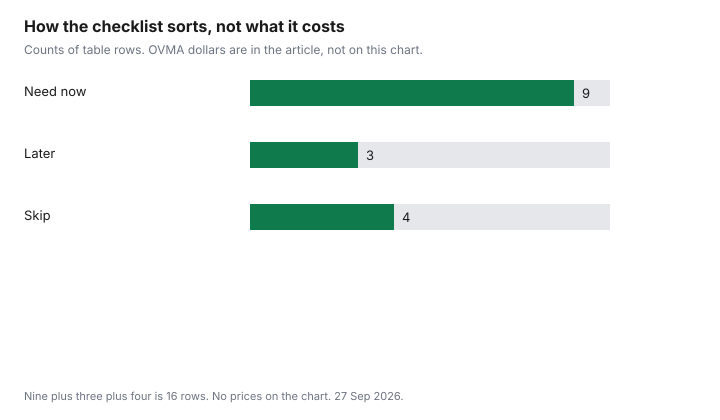

Pets · Canada
New Puppy or Kitten Supply List in Canada: What You Need and What to Skip
Starter kits are a cart someone else filled. A puppy and a kitten do not need the same cart, and neither needs a themed wardrobe before the first night. This page is a short Canadian list: what has to be in the house on day one, what can wait, and what to skip. Dollar lines, where they appear, are printed on the Ontario Veterinary Medical Association’s 2025 cost-of-care PDFs, as of 27 Sep 2026. They are provincial averages. They are not a quote and not a ranking of brands. The full first-year picture is the dog cost guide and the cat cost guide. This page does not rebuild those totals. Education only. Not veterinary advice.
Key takeaways
- Nine rows are need-now, three are later, and four are skip. The chart shows the same three buckets as a checklist, with no dollars.
- OVMA’s 2025 Ontario puppy sheet prints a crate at $178, a bed at $78, collar and leash at $55, toys at $83, bowls at $44, and food at $866. Those are averages, not a kit to buy on day one at those prices.
- The kitten sheet prints a carrier at $89, a scratching post at $44, litter and a litter box at $308, a bed at $55, and food at $674. The $308 includes the box, so it is not a monthly litter price.
- Opened food, a worn harness, and a chewed toy are skips. Used crates and carriers are a maybe, after the recall search on the secondhand guide.
- First-year totals live on the dog and cat cost guides. This page stays an item list.
Day-one essentials for puppies
A puppy needs food it will eat tonight, a bowl for food and a bowl for water, a collar and a leash that fit today, a crate or other confined sleep space with a latch that works, a bed or a washable pad, and a few toys that are not already chewed.
The OVMA 2025 puppy page prints food at $866, bowls at $44, collar and leash at $55, crate at $178, bed at $78, and toys at $83. Those figures are a provincial average for a year of those categories, not the price of the smallest version that gets you through the week. A $178 crate on the sheet does not mean a used intact crate is wrong. It means the sheet assumed a new-item average. The secondhand guide is the inspect-and-recall path before a used crate comes inside.
Food is the line people overbuy. Do not bring home the biggest bag until the puppy is actually eating that food. The shelter or the breeder’s current food, for a few days, is the transition the cost-per-day guide assumes you will price properly once you are choosing the next bag. The puppy sheet also prints a licence at $25, a microchip at $137, and obedience classes at $555. Those are not shopping-aisle toys. The licence is your municipality’s fee, which you confirm locally because the sheet is an Ontario average. The microchip and the class are care and training, not a basket at a pet store. The adoption guide is where the fee to acquire the dog is discussed. It was not on this supply PDF as a purchase price, and it is not added here.
Day-one essentials for kittens
A kitten needs food, bowls, a litter box and unused litter, a carrier that latches, a bed, a scratching post that does not wobble, and a few toys. The OVMA 2025 kitten page prints food at $674, bowls at $44, collar at $22, bed at $55, toys at $50, scratching post at $44, carrier at $89, and litter and litter box together at $308.
The adult cat page prints litter alone at $258, which is $21.50 a month if you divide by 12. Do not divide the kitten’s $308 the same way. The box is in that number. The litter guide is the monthly worksheet once you know which litter you pour. A collar at $22 on the kitten sheet is not a day-one order for an indoor kitten that is not going outside. Put the collar on when you need identification, and buy one that fits then, not a pile of colours now.
The kitten sheet also prints a licence at $15 and a microchip at $137. Same caution: confirm the licence where you live. Exams, vaccines, and surgery are on the sheet and are not aisle purchases. The low-cost vet guide is where published clinic fees are discussed. This list does not restock that guide. A scratching post is day-one because scratching is normal, and a kitten without a post will pick the sofa. Cornell’s feline behaviour page, cited on the nail and grooming guide, is about the nails that come with that habit. You do not need a cat tree the height of the doorway on night one. You need one stable thing they will use.
What should you skip or delay?
Skip clothing. Skip a second crate or a bed in every room before you know where the animal sleeps.
Skip opened food from a stranger. Skip a worn harness and a chewed toy. Those four are the skip rows in the table. Delay the nail clipper until you are ready to learn the trim or until a clinic shows you, delay a brush until you know the coat, and delay a fountain or an automatic feeder until eating and drinking are settled. A fountain is not water. Water on night one is a bowl you can wash. An automatic feeder full of a food the puppy then refuses is a stale bag.
Also delay the largest food bag, a matching set of bowls in three sizes, and any “starter kit” whose contents you have not read. A kit that adds outfits and a plush you will throw out has a price for items on the skip list. The where-to-buy guide is how to compare a real basket once you know the items. It is not a reason to fill the cart tonight. A store-brand food comparison is for later, when you are choosing a bag on cost per day, not for the first hungry evening.
Buy used vs new
Used is reasonable for a crate, a rigid carrier, a stainless or ceramic bowl that is not cracked, a gate, and a bed you can wash. New is the right default for a collar, a leash, a harness, and anything that goes in the mouth if the used version is chewed.
Litter is new. Opened food is a skip. The decision procedure, including the Health Canada recall search, is the secondhand guide. This page does not repeat the cleaning steps. If you cannot search the brand, do not put the animal in the crate tonight. Buy or borrow one you can identify, or use a laundry room that already closes, and shop in daylight.
A used bowl at no cost still has to be washed. A used carrier with a cracked shell is not a saving against the kitten sheet’s $89. The $89 is an average, not a target to spend up to. Spend less when the item is sound. Spend the sheet’s number only if that is what the sound item costs where you are. The used household guide is the non-pet version of the same caution.
Budget checklist table
The “when” column is the bucket each item sits in on the chart. A row that says now is one of the nine.
Later is one of the three. Skip is one of the four. Species columns say who the row is for. A kitten does not need the puppy’s crate as a default, and a puppy does not need a litter box.
| Item | Puppy | Kitten | When | New or used |
|---|---|---|---|---|
| Food the animal is eating now | Yes | Yes | Now | New. Not an opened bag from a stranger. |
| Bowls | Yes | Yes | Now | Used if stainless or ceramic and not cracked. |
| Collar and leash that fit | Yes | When it needs ID | Now | New. Fit fails on a stretched used strap. |
| Crate | Yes | No, unless you are crate-training | Now | Used if intact and not recalled. |
| Carrier | Yes, for the vet trip | Yes | Now | Used if latches, vents, and handle work. |
| Bed or washable pad | Yes | Yes | Now | Used if the cover washes and the foam is dry. |
| A few toys | Yes | Yes | Now | New if the used toy is chewed. |
| Litter and a box | No | Yes | Now | Litter new. Box used if you can clean it. |
| Scratching post | No | Yes | Now | Used if it does not wobble. |
| Nail clipper | Yes | Yes | Later | New. Learn the trim before you need a perfect tool. |
| Brush or comb | Yes | Yes | Later | New, once you know the coat. |
| Fountain or automatic feeder | Optional | Optional | Later | Either, after eating and drinking are settled. |
| Clothing | No | No | Skip | Skip. |
| Second crate, or a bed in every room | No | No | Skip | Skip until you know the one they use. |
| Opened food from a stranger | No | No | Skip | Skip. |
| Worn harness or chewed toy | No | No | Skip | Skip. |
First-month recurring costs
The first month is not the OVMA year divided by twelve, because surgery, a microchip, and a crate do not repeat every month. What does repeat is food, and for a kitten, litter.
Adult dog food on the sheet is $1,418 a year. Puppy food is $866 for that first year on the sheet, which is not “a month of adult food.” Price the bag you bought on cost per day and multiply by the days in the month. Kitten litter is inside the $308 line with the box. After the box is bought, the adult sheet’s litter line of $258 a year is $21.50 a month, and it still does not tell you clay from pine. Parasite prevention, exams, and vaccines are on the sheet and are clinic conversations. The low-cost vet guide is that conversation. A licence is due on your city’s calendar, not on the pet store’s.
If you want one place to park the repeating part, write food per day times the days, plus litter per month once you have timed a bag, plus a line for treats if you are already handing them out. Leave grooming, boarding, and a purchase fee off this list until you have a quote. The dog and cat guides already say the OVMA sheets do not include every one of those. This checklist will not invent them.

Sources
- Ontario Veterinary Medical Association, Cost of Care canine PDF, as of 27 Sep 2026. Puppy: food $866, bowls $44, collar and leash $55, bed $78, toys $83, crate $178, licence $25, microchip $137, obedience classes $555. Adult food $1,418.
- Ontario Veterinary Medical Association, Cost of Care feline PDF, as of 27 Sep 2026. Kitten: food $674, bowls $44, collar $22, bed $55, toys $50, scratching post $44, carrier $89, litter and litter box $308, licence $15, microchip $137. Adult litter $258.
- No starter-kit shelf price is listed here. No first-year total is added on this page.
Frequently asked questions
What do I need for a new puppy?
Food the puppy is eating, bowls, a collar and leash that fit, a crate that latches, a bed or washable pad, and a few toys that are not chewed. The OVMA 2025 puppy sheet prints averages for several of those lines, including a crate at $178 and food at $866, and those averages are not a cart you must fill at those prices. A licence, a microchip, and vaccines are real and are not aisle toys, so confirm the licence locally. This is not veterinary advice.
What do I need for a new kitten?
Food, bowls, unused litter and a box, a carrier that latches, a bed, a stable scratching post, and a few toys. The OVMA 2025 kitten sheet prints a carrier at $89, a scratching post at $44, and litter plus a box at $308, and the box is inside that $308, so it is not a monthly litter price. A collar can wait until the kitten needs identification. The adult sheet’s litter line is $258 a year.
What can I skip buying?
Skip clothing, a second crate or a bed in every room, opened food from a stranger, and a worn harness or a chewed toy. Delay a nail clipper, a brush, and a fountain or automatic feeder until the coat and the eating habit are clear. Also delay the largest food bag until the animal is actually eating that food. A starter kit that adds the skip rows is not a deal.
Can I buy puppy supplies used?
Yes for a crate, a rigid carrier, a sound stainless or ceramic bowl, a gate, and a bed you can wash, after you inspect them and search the brand on Health Canada’s recalls site. Prefer new for a collar, leash, or harness, because fit and stitching are the point, and skip chewed toys and opened food. The secondhand guide is the checklist. A used price is not listed here.
What recurring costs should I expect?
Food, and litter if you have a cat, repeat every month, so price food per day from the bag you bought. The OVMA adult dog food line is $1,418 a year and the adult cat litter line is $258 a year, which is $21.50 a month, and neither figure is your quote. Surgery, a crate, and a microchip are not monthly, and grooming and boarding are not on those sheets. The dog and cat cost guides hold the rest of the year, and this page does not add a first-year total.
Researched and drafted with AI assistance and fact-checked against official Canadian sources. How we create content.
Disclosure: Amazon.ca storefront categories are an offer type. Saving Optimizer may earn a commission if we later add a partner link. We do not currently claim an Amazon partnership. Education only. This is not veterinary advice. A storefront link does not change the arithmetic.